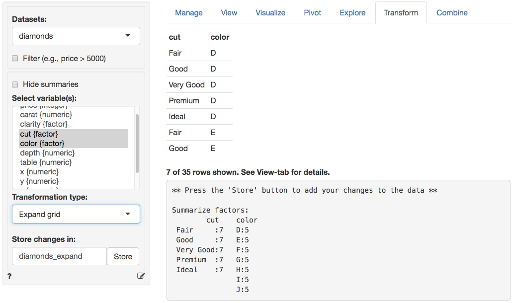

Data > Transform
Transform variables
Transform command log
All transformations applied in the Data > Transform tab can be logged. If, for example, you apply a log transformation to numeric variables the following code is generated and put in the Transform command log window at the bottom of your screen when you click the Store button.
## transform variable
r_data[['diamonds']] <- mutate_each(r_data[['diamonds']], funs(log), ext = '_log', price, carat)This is an important feature if you want to re-run a report with new, but similar, data. Even more important is that there is a record of the steps taken to transform the data and to generate results, i.e., your work is now reproducible.
To add commands contained in the command log window to a report in R Report click the icon.
Filter
Even if a filter has been specified it will be ignored for (most) functions available in Data > Transform. To create a new dataset based on a filter navigate to the Data > View tab and click the Store button. Alternatively, to create a new dataset based on a filter, select Split data > Holdout sample from the Transformation type dropdown.
Hide summaries
For larger datasets, or when summaries are not needed, it can useful to click Hide summariesbefore selecting the transformation type and specifying how you want to alter the data. If you do want to see summaries make sure that Hide summaries is not checked.
Change variables
Bin
The Bin command is a convenience function for the xtile command discussed below when you want to create multiple quitile/decile/… variables. To calculate quintiles enter 5 as the Nr bins. The reverse option replaces 1 by 5, 2 by 4, …, 5 by 1. Choose an appropriate extension for the new variable(s).
Change type
When you select Type from the Transformation type drop-down another drop-down menu is shown that will allow you to change the type (or class) of one or more variables. For example, you can change a variable of type integer to a variable of type factor. Click the Store button to commit the changes to the data set. A description of the transformation options is provided below.
- As factor: convert a variable to type factor (i.e., a categorical variable)
- As number: convert a variable to type numeric
- As integer: convert a variable to type integer
- As character: convert a variable to type character (i.e., strings)
- As date (mdy): convert a variable to a date if the dates are structured as month-day-year
- As date (dmy): convert a variable to a date if the dates are structured as day-month-year
- As date (ymd): convert a variable to a date if the dates are structured as year-month-day
- As date/time (mdy_hms): convert a variable to a date if the dates are structured as month-day-year-hour-minute-second
- As date/time (mdy_hm): convert a variable to a date if the dates are structured as month-day-year-hour-minute
- As date/time (dmy_hms): convert a variable to a date if the dates are structured as day-month-year-hour-minute-second
- As date/time (dmy_hm): convert a variable to a date if the dates are structured as day-month-year-hour-minute
- As date/time (ymd_hms): convert a variable to a date if the dates are structured as year-month-day-hour-minute-second
- As date/time (ymd_hm): convert a variable to a date if the dates are structured as year-month-day-hour-minute
Normalize
Choose Normalize from the Transformation type drop-down to standardize one or more variables. For example, in the diamonds data we may want to express price of a diamond per-carat. Select carat as the Normalizing variable and price in the Select variable(s) box. You will see summary statistics for the new variable (e.g., price_carat) in the main panel. Commit changes to the data by clicking the Store button.
Recode
To use the recode feature select the variable you want to change and choose Recode from the Transformation type drop-down. Provide one or more recode commands, separated by a ;, and press return to see information about the changed variable. Note that you can specify a name for the recoded variable in the Recoded variable name input box (press return to submit changes). Finally, click Store to add the recoded variable to the data. Some examples are given below.
- Set values below 20 to
Lowand all others toHigh
lo:20 = 'Low'; else = 'High'- Set above 20 to
Highand all others toLow
20:hi = 'High'; else = 'Low'- Set values 1 through 12 to
A, 13:24 toB, and the remainder toC
1:12 = 'A'; 13:24 = 'B'; else = 'C'- Collapse age categories for a Basics > Tables > Cross-tabs cross-tab analysis. In the example below
<25and25-34are recoded to<35,35-44and35-44are recoded to35-54, and55-64and>64are recoded to>54
'<25' = '<35'; '25-34' = '<35'; '35-44' = '35-54'; '45-54' = '35-54'; '55-64' = '>54'; '>64' = '>54'- To exclude a particular value (e.g., an outlier in the data) for subsequent analyses we can recode it to a missing value. For example, if we want to remove the maximum value from a variable called
salesthat is equal to 400 we would (1) select the variablesalesin theSelect variable(s)box and enter the command below in theRecodebox. PressreturnandStoreto add the recoded variable to the data
400 = NA- To recode specific numeric values (e.g., carat) to a new value (1) select the variable
caratin theSelect variable(s)box and enter the command below in theRecodebox to set the value for carat to 2 in all rows where carat is currently larger than or equal to 2. PressreturnandStoreto add the recoded variable to the data
2:hi = 2Note: Do not use = in a variable label when using the recode function (e.g., 50:hi = '>= 50') as this will cause an error.
Reorder or remove levels
If a (single) variable of type factor is selected in Select variable(s), choose Reorder/Remove levels from the Transformation type drop-down to reorder and/or remove levels. Drag-and-drop levels to reorder them or click the \(\times\) to remove them. Press Store to commit the changes. To temporarily exclude levels from the data use the Filter box (see the help file linked in the Data > View tab).
Rename
Choose Rename from the Transformation type drop-down, select one or more variables, and enter new names for them in the Rename box. Separate names by a ,. Press return to see summaries for the renamed variables on screen and press Store to alter the variable names in the data.
Replace
Choose Replace from the Transformation type drop-down if you want to replace existing variables in the data with new ones created using, for example, Create, Transform, Clipboard, etc.. Select one or more variables to overwrite and the same number of replacement variables. Press Store to alter the data.
Transform
When you select Transform from the Transformation type drop-down another drop-down menu is shown you can use to apply common transformations to one or more variables in the data. For example, to take the (natural) log of a variable select the variable(s) you want to transform and choose Ln (natural log) from the Apply function drop-down. The transformed variable will have the extension specified in the Variable name extension input (e.g,. _ln). Make sure to press return after changing the extension. Click the Store button to add the (changed) variable(s) to the data set. A description of the transformation functions included in Radiant is provided below.
- Ln: create a natural log-transformed version of the selected variable (i.e., log(x) or ln(x))
- Square: multiply a variable by itself (i.e., x^2 or square(x))
- Square-root: take the square-root of a variable (i.e., x^.5)
- Absolute: Absolute value of a variable (i.e., abs(x))
- Center: create a new variable with a mean of zero (i.e., x - mean(x))
- Standardize: create a new variable with a mean of zero and standard deviation of one (i.e., (x - mean(x))/sd(x))
- Inverse: 1/x
Create new variable(s)
Clipboard
Although not recommended, you can manipulate your data in a spreadsheet (e.g., Excel or Google sheets) and copy-and-paste the data back into Radiant. If you don’t have the original data in a spreadsheet already use the clipboard feature in Data > Manage so you can paste it into the spreadsheet or click the download icon on the top right of your screen in the Data > View tab. Apply your transformations in the spreadsheet program and then copy the new variable(s), with a header label, to the clipboard (i.e., CTRL-C on windows and CMD-C on mac). Select Clipboard from the Transformation type drop-down and paste the new data into the Paste from spreadsheet box. It is key that new variable(s) have the same number of observations as the data in Radiant. To add the new variables to the data click Store.
Note: Using the clipboard feature for data transformation is discouraged because it is not reproducible.
Create
Choose Create from the Transformation type drop-down. This is the most flexible command to create new or transform existing variables. However, it also requires some basic knowledge of R-syntax. A new variable can be any function of other variables in the (active) dataset. Some examples are given below. In each example the name to the left of the = sign is the name of the new variable. To the right of the = sign you can include other variable names and basic R-functions. After you type the command press return to see summary statistics for the new variable. If the result is as expected press Store to add it to the dataset.
Note: If one or more variables is selected from the
Select variableslist they will be used to group the data before creating the new variable (see example 1. below). If this is not the intended result make sure that no variables are selected when creating new variables
- Create a new variable
zthat is equal to the mean of price. To calculate the mean of price per group (e.g., per level of clarity) selectclarityfrom theSelect variableslist before creatingz
z = mean(price)- Create a new variable
zthat is the difference between variables x and y
z = x - y- Create a new variable
zthat is a transformation of variablexwith mean equal to zero (see alsoTransform > Center):
z = x - mean(x)- Create a new _logical) variable
zthat takes on the value TRUE whenx > yand FALSE otherwise
z = x > y- Create a new logical
zthat takes on the value TRUE whenxis equal toyand FALSE otherwise
z = x == y- Create a variable
zthat is equal toxlagged by 3 periods
z = lag(x,3)- Create a categorical variable with two levels (i.e.,
smallerandbigger)
z = ifelse(x < y, 'smaller', 'bigger')- Create a categorical variable with three levels. An alternative approach would be to use the
Recodefunction described below
z = ifelse(x < 60, '< 60', ifelse(x > 65, '> 65', '60-65'))- Convert an outlier to a missing value. For example, if we want to remove the maximum value from a variable called
salesthat is equal to 400 we could use anifelsestatement and enter the command below in theCreatebox. PressreturnandStoreto add thesales_rcto the data. Note that if we had enteredsaleson the left-hand side of the=sign the original variable would have been overwritten
sales_rc = ifelse(sales > 400, NA, sales)- If a respondent with ID 3 provided information on the wrong scale in a survey (e.g., income in $1s rather than in $1000s) we could use an
ifelsestatement and enter the command below in theCreatebox. As before, pressreturnandStoreto addsales_rcto the data
income_rc = ifelse(ID == 3, income/1000, income)- If multiple respondents made the same scaling mistake (e.g., those with ID 1, 3, and 15) we again use
Createand enter:
income_rc = ifelse(ID %in% c(1, 3, 15), income/1000, income)- If a date variable is in a format not available through the
Typemenu you can use theparse_date_timefunction. For a date formated as2-1-14you would specify the command below (note that this format will also be parsed correctly by themdyfunction in theTypemenu)
date = parse_date_time(x, '%m%d%y')- Determine the time difference between two dates/times in seconds
tdiff = as_duration(time2 - time1)- Extract the month from a date variable
m = month(date)- Other attributes that can be extracted from a date or date-time variable are
minute,hour,day,week,quarter,year,wday(for weekday). Forwdayandmonthit can be convenient to addlabel = TRUEto the call. For example, to extract the weekday from a date variable and use a label rather than a number
wd = wday(date, label = TRUE)- Calculate the distance between two locations using lat-long information
dist = as_distance(lat1, long1, lat2, long2)- Calculate quintiles for a variable
recencyby using thextilecommand. To create deciles replace5by10.
rec_iq = xtile(recency, 5)Note: For examples 7, 8, and 15 above you may need to change the new variable to type factor before using it for further analysis (see also Type above)
Clean data
Remove missing values
Choose Remove missing from the Transformation type drop-down to eliminate rows with one or more missing values. Rows with missing values for Select variables will be removed. Press Store to change the data. If missing values were present you will see the number of observations in the data summary change (i.e., the value of n changes) as variables are selected.
Reorder or remove variables
Choose Reorder/Remove variables from the Transformation type drop-down. Drag-and-drop variables to reorder them in the data. To remove a variable click the \(\times\) symbol next to the label. Press Store to commit the changes.
Remove duplicates
It is common to have one or more variables in a dataset that should have only unique values (i.e., no duplicates). Customers IDs, for example, should be unique unless the dataset contains multiple orders for the same customer. To remove duplicates select one or more variables to determine uniqueness. Choose Remove duplicates from the Transformation type drop-down and check how the summary statistics change. Press Store to change the data. If there are duplicate rows you will see the number of observations in the data summary change (i.e., the value of n and n_distinct will change).
Show duplicates
If there are duplicates in the data use Show duplicates to get a better sense for the data points that have the same value in multiple rows. If you want to explore duplicates using the Data > View tab make sure to Store them in a different dataset (i.e., make sure not to overwrite the data you are working on). If you choose to show duplicates based on all columns in the data only one of the duplicate rows will be shown. These rows are exactly the same so showing 2 or 3 isn’t helpful. If, however, we look for duplicates based on a subset of the available variables Radiant will generate a dataset with all similar rows.
Expand data
Expand grid
Create a dataset with all combinations of values for a selection of variables. This is useful to generate datasets for prediction in, for example, Model > Linear regression (OLS) or Model > Logistic regression (GLM). Suppose you want to create a dataset with all possible combinations of values for cut and color of a diamond. By selecting Expand grid from the Transformation type dropdown and cut and color in the Select variable(s) box we can see in the screenshot below that there are 35 possible combinations (i.e., cut has 5 unique values and color has 7 unique values so 5 x 7 combinations are possible). Choose a name for the new dataset (e.g., diamonds_expand) and click the Store button to add it to the Datasets dropdown.

Table-to-data
Turn a frequency table into a dataset. The number of rows will equal the sum of all frequencies.
Split data
Holdout sample
To create a holdout sample based on a filter, select Holdout sample from the Transformation type dropdown. By default the opposite of the active filter is used. For example, if analysis is conducted on observations with date < '2014-12-13' then the holdout sample will contain rows with date >= '2014-12-13' if the Reverse filter box is checked.
Training variable
To create a variable that can be used to (randomly) filter a dataset for training and validation, select Training variable from the Transformation type dropdown. Specify either the number of observations to use for training (e.g., set Size to 2000) or a proportion of observations to select (e.g., set Size to .7). The new variable will have a value 1 for training and 0 holdout.
Tidy data
Gather columns
Combine multiple variables into one column. If you have the diamonds dataset loaded, select cut and color in the Select variable(s) box after selecting Gather columns from the Transformation type dropdown. This will create new variables key and value. key has two levels (i.e., cut and color) and value captures all values in cut and color.
Spread column
Spread one column into multiple columns. The opposite of gather. For a detailed discussion about tidy data see the tidy-data vignette.